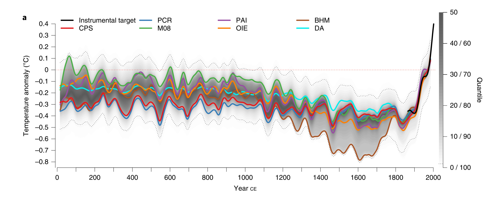

Калькулятор экологического следа от использования энергии в квартире
Как пользоваться калькулятором экологического следа
Этот калькулятор поможет вам определить, какое влияние оказывает ваш повседневный образ жизни на окружающую среду. Он рассчитает экологический след, который вы оставляете, на основе потребляемых вами электроэнергии, горячей воды, теплоснабжения и бытового газа. Калькулятор подойдёт, если вы проживаете в городской квартире, но может быть полезен и жителям загородных домов.
Чтобы начать расчет:
- Введите, сколько киловатт-часов (кВт*ч) электроэнергии вы обычно тратите.
- Укажите количество горячей воды в кубометрах, которое вы используете.
- Введите данные по теплоснабжению (если измеряется в гигакалориях).
- Оцените потребление бытового газа в кубометрах. Если у вас нет счётчика газа, то введите произведение нормативного потребления в вашем городе (регионе) на число жильцов в квартире.
- Выберите вид топлива для отопления дома (например, нефть, газ, уголь и так далее).
- Жильцы: укажите, сколько человек проживает в квартире.
После того как вы заполните все необходимые поля, нажмите кнопку "Рассчитать". Калькулятор покажет диаграмму, которая наглядно демонстрирует вклад каждого типа энергии в общий экологический след. Также вам будут доступны данные о количестве энергии на производство горячей воды, теплоты и энергии, потребляемой при использовании бытового газа на одного человека.
Используя эту информацию, вы сможете более сознательно относиться к потреблению ресурсов и поискать способы уменьшения своего воздействия на природу, например, снижая потребление или инвестируя в более эффективные технологии.
|
|
1
|
| Энергозатраты на производство горячей воды | |
| на человека | |
| Энергозатраты на производство теплоты | |
| на человека | |
| Энергия, потреблённая при использовании бытового газа | |
| на человека | |
| Общая сумма потреблённой энергии | |
| на человека | |
| Потреблено | |
| на человека | |
| Общие выбросы углекислого газа | |
| на человека |
Основные выводы
Основной источник вашего углеродного следа в квартире - . Обратите внимание на повышение эффективности в этой сфере. Однако первоисточником выбросов являются теплоэлектростанции. Важно понять, что сжигание углеводородов, угля или, тем более, пластиковых и других отходов негативно влияют на устойчивость климата, но и ведут к загрязнению воздуха, что негативно сказывается на здоровье людей и особенно на детях. Ещё Менделеев говорил, что сжигание - самый бесхозяйственный способ использования нефти и газа, которые накапливались в недрах Земли на протяжении сотен миллионов лет.
Изменение климата - это реальность, которая особенно влияет на Россию. За последние 100 лет среднегодовая температура на территории нашей страны выросла более чем на 20 градусов.
Необходимо переходить к более чистым источникам энергии: солнечным и ветряным электростанциям. Их эффективность в последние годы стремительно растёт благодаря новейшим научным исследованиям и инженерным разработкам, в том числе российскимa,б.
Рекомендации
Отопление
- Улучшение теплоизоляции квартиры. Утепление стен, крыши, окон, балкона. Замена старых окон на пластиковые вакуумные пакеты.
- Использование термостатов и систем автоматического регулирования для оптимизации потребления тепла.
- Переход на более экологичные виды топлива (если это возможно для центрального отопления).
- Вместо включения дополнительного электроотопления часто достаточно одеться немного потеплее.
- Если вы собираетесь приобретать кондиционер, обратите внимание на рекуператоры. Рекуператоры обеспечивают повторное использование тепла отводимого на улицу воздуха для нагревания свежего воздуха, поступающего с улицы.
Расчет сокращения углеродного следа: Утепление здания может сократить потребление энергии на отопление до 50%. Использование термостатов может привести к экономии до 20% энергии. Энергозатраты на отопление превосходят все остальные на порядок, поэтому усилия по повышению его эффективности могут принести наибольший результат.
Горячая вода
- Установка экономичных смесителей и душевых головок. Это поможет сократить потребление воды и, соответственно, энергии на её нагрев.
- Теплоизоляция труб горячего водоснабжения для минимизации теплопотерь.
- Регулярное обслуживание системы горячего водоснабжения для повышения её эффективности.
- Если у вас большая семья, задумайтесь о приобретении посудомоечной машины. Она не только сбережёт ваше время, но и сократит использование воды на мытьё посуды.
- Отдавайте предпочтение быстрому душу вместо горячей ванной. Иногда душ можно принимать вдвоём.
Расчет сокращения углеродного следа: Установка экономичных смесителей может сократить потребление воды на 30-50%. Теплоизоляция труб может снизить потери тепла на 20-30%.
Электричество
- Переход на возобновляемые источники энергии. Если есть возможность, подключите дом к источникам "зелёной энергии" (солнечным панелям, ветровым турбинам).
- Энергоэффективное оборудование. Используйте приборы с высоким классом энергоэффективности (A+, A++).
- Светодиодное освещение. Замените лампы накаливания и люминесцентные лампы на светодиодные.
- Использование программаторов и таймеров для контроля за работой электроприборов, плавную регулировку яркости освещения.
- Отключайте неиспользуемые электроприборы, зарядные устройства от розетки.
- При использовании чайника с термостатом понижайте его целевую температуру до 40-50°C (напитки с температурой свыше 60°C повышают риск рака пищевода)).
- Холодильник - один из основных потребителей электричества в квартире. Обратите внимание на его расположение и эффективность. Для хранения молочных продуктов, фруктов и овощей достаточно поддерживать температуру 10-15°C, более низкие температуры в холодильном отсеке могут привести к подмерзанию и избыточному энергопотреблению. Холодильник не должен стоять близко к трубам отопления и плите или к стенам. Если нельзя отодвинуть его от источников тепла, подумайте о способах его теплоизоляции.
Расчет сокращения углеродного следа: Замена обычных ламп на светодиодные может сократить потребление энергии на 80-90%. Переход на энергоэффективные приборы может сократить потребление на 20-50%, в зависимости от типа и возраста заменяемого оборудования. Отключение каждого неиспользуемого электроприбора от розетки сократит энергопотребление на 100-200 Вт*ч в сутки.
Бытовой газ
- Если вы получаете газ из распределительнйо сети, установите счётчик, чтобы контролировать своё потребление.
- Если вы планируете приобретать новую посуду (кастрюли, сковорродки), обратите внимание на то, насколько эффективно и быстро они способны нагревать блюда.
- Регулярное техническое обслуживание газового оборудования для обеспечения его эффективной работы.
- Использование кухонной техники с высоким КПД.
- Использование конденсационных котлов для отопления и нагрева воды, если это применимо.
Расчет сокращения углеродного следа: Конденсационные котлы могут быть на 10-20% эффективнее стандартных котлов. Регулярное обслуживание может повысить эффективность на 5-10%.
Общие рекомендации
- Повышение осведомленности о способах экономии энергии среди жителей дома.
- Внедрение системы умного дома для контроля и оптимизации потребления всех видов энергии.
При реализации вышеупомянутых мер можно достичь значительного снижения углеродного следа. Важно подходить к этому комплексно, поскольку комбинирование различных подходов даст наилучший результат.
Дополнительная информация
Калькулятор углеродного следа предназначен для оценки объема выбросов углекислого газа (CO2), связанных с потреблением различных видов энергии и топлива. Это важный инструмент для понимания и уменьшения воздействия на климат.
Текущее содержание углекислого газа
По последним данным, концентрация углекислого газа в атмосфере Земли превышает 415 ppm (частей на миллион) и продолжает расти примерно на 2-3 ppm в год. Это увеличение является результатом человеческой деятельности, особенно сжигания ископаемого топлива. Углекислый газ - не единственный антропогенный парниковый газ. Например, метан и даже водяной пар обладают даже более сильным парниковым эффектом, но именно поступление углекислого газа начало стремительно расти после промышленной революции.
Рост температуры на Земле реален и продолжается
В течение последних 2000 лет на Земле наблюдались изменения температуры, вызванные как естественными, так и антропогенными факторами, а также возникающие самостоятельно в климатической системе. Реконструкции глобальной средней температуры за последние 2000 лет показывают, что значительная часть многодесятилетней изменчивости доиндустриального периода (1300-1800 гг.) связана с вулканическими выбросами. Однако наибольшие многолетние тренды потепления наблюдаются, начиная со второй половины XX века, что подчеркивает необычный характер потепления в последние десятилетия. Единственным объяснением наблюдающегося роста температуры сегодня оказывается влияние хозяйственной деятельности человека.
Современная температура на Земле уже превысила среднегодовую температуру, наблюдавшуся 100-150 лет назад, на 1°C. Рост температуры продолжается, так как продолжаются выбросы парниковых газов, превосходящие способность биосферы их поглощать. Изменение климата уже влияет на жизнь людей по всему миру, в том числе и в России.
Углеродный след по странам
Углеродный след жителей различных стран значительно различается из-за разного уровня потребления и энергетической эффективности. В среднем, жители США и Китая имеют одни из самых высоких показателей углеродного следа на душу населения, тогда как в Африке этот показатель значительно ниже. Европейские страны обычно занимают промежуточное положение, в то время как Россия имеет высокие показатели из-за большого потребления ископаемого топлива и меньшей энергоэффективности.
Действия для сдерживания роста температуры
Чтобы ограничить глобальное потепление до 1.5°C относительно прединдустриального уровня, необходимо значительно сократить выбросы парниковых газов. Это включает в себя переход на возобновляемые источники энергии, повышение энергоэффективности, защиту и восстановление лесов, а также изменение потребительских привычек и сокращение потребления ресурсов.
Пересчет единиц энергии
Для пересчета гигакалорий в киловатт*часы используется формула:
где - энергия в киловатт*часах, - энергия в гигакалориях.
Чтобы пересчитать количество калорий, необходимых для нагрева 1 м³ воды с 25°C до 60°C (минимальная нормативная температура), используем следующую формулу:
где:
- — количество теплоты (в калориях),
- — удельная теплоёмкость воды (1 ккал/(кг·°С)),
- — масса воды (в кг),
- — разница температур в °C.
Поскольку плотность воды примерно равна 1 кг/л, для 1 м³ воды (1000 л) масса составит 1000 кг.
Переведём ккал в кДж, используя коэффициент 1 ккал = 4.184 кДж:
Теперь переведём кДж в кВт·час, зная, что 1 кВт·час = 3600 кДж:
Таким образом, для нагрева 1 м³ воды с 25°C до 60°C потребуется примерно 40.67 кВт·час энергии.
Пересчет киловатт*часов в массу топлива
Формула:
где - масса топлива в килограммах, - энергия в киловатт*часах, - коэффициент перевода 1 кг топлива в энергию (кВт*ч).
Пересчет массы топлива в CO2
Формула:
где - масса CO2 в килограммах, - масса топлива, - коэффициент выбросов CO2 на 1 кг топлива.
Потребление энергии
| Тип энергии | Значение (кВт*ч) |
|---|---|
| Электроэнергия | 1 |
| Тепловая энергия | 1162.22 |
| Горячая вода | 40.678 |
| Городской газ | 14.5 |
Преобразование топлива в энергию
| Тип топлива | Значение (кВт*ч на 1 кг) |
|---|---|
| Нефть | 12.46 |
| Дизельное топливо | 12.2 |
| Мазут | 11.2 |
| Керосин | 12.4 |
| Бензин | 12.2 |
| Метан | 14.5 |
| Сжиженный газ | 12.5 |
| Природный газ | 13.3 |
| Пропан | 13.4 |
| Этилен | 13.3 |
| Водород | 36 |
| Каменный уголь | 9 |
| Бурый уголь | 4.1 |
| Антрацит | 9 |
| Древесный уголь | 6 |
| Торф (влажность 40%) | 3.6 |
| Торфяные брикеты (влажность 15%) | 4.1 |
Выбросы CO2 от производства энергии на 1 кг топлива (в кг)
| Тип топлива | Выбросы CO2 (кг на кг топлива) |
|---|---|
| Природный газ | 1.603 |
| Уголь | 3.581 |
| Торфяные брикеты | 4.412 |
| Дизельное топливо (солярка) | 2.172 |
| Керосин | 2.109 |
| Бензин | 2.013 |
| Мазут | 3.223 |
| Нефть | 3.15 |
Выбросы CO2 от производства энергии на 1 кВт*ч от альтернативных источников энергии
| Тип топлива/энергии | Выбросы CO2 (кг на кВт*ч) |
|---|---|
| Ядерная энергия | 0.004 |
| Солнечная энергия | 0.006 |
| Ветровая энергия | 0.004 |
| Гидроэнергия | 0.097 |
| Биоэнергия | 0.098 |
- Удельная теплота сгорания (теплотворная способность). Высшая и низшая теплота сгорания. Потребность в кислороде // Инженерный справочник. Таблицы.
- Pehl, M., Arvesen, A., Humpenöder, F., Popp, A., Hertwich, E. G., & Luderer, G. (2017). Understanding future emissions from low-carbon power systems by integration of life-cycle assessment and integrated energy modelling. Nature Energy, 2(12), 939-945
- Engineering ToolBox. Combustion Heat
- Диоксид углерода. Википедия
- Климатический хаос. ТАСС
- Моделирование климата за две тысячи лет не нашло периодов глобального потепления до XX века. N+1
- Публикации о климате на сайте проекта "Земля касается каждого".